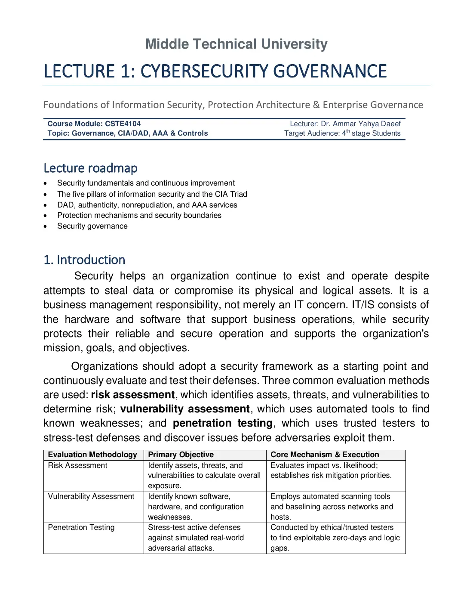
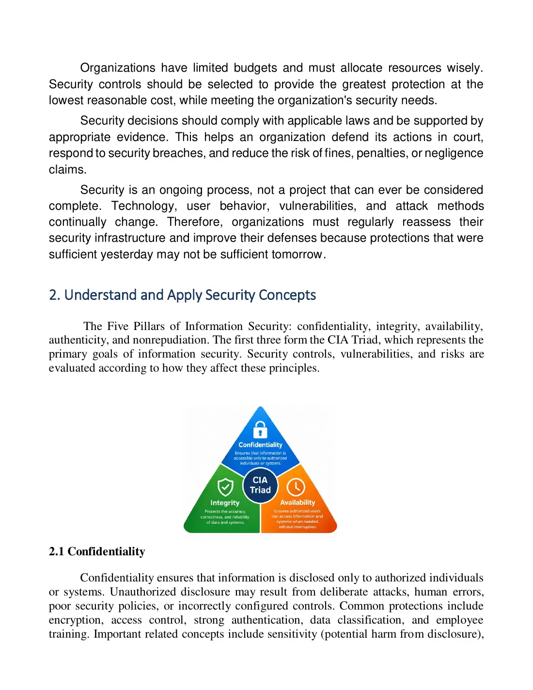
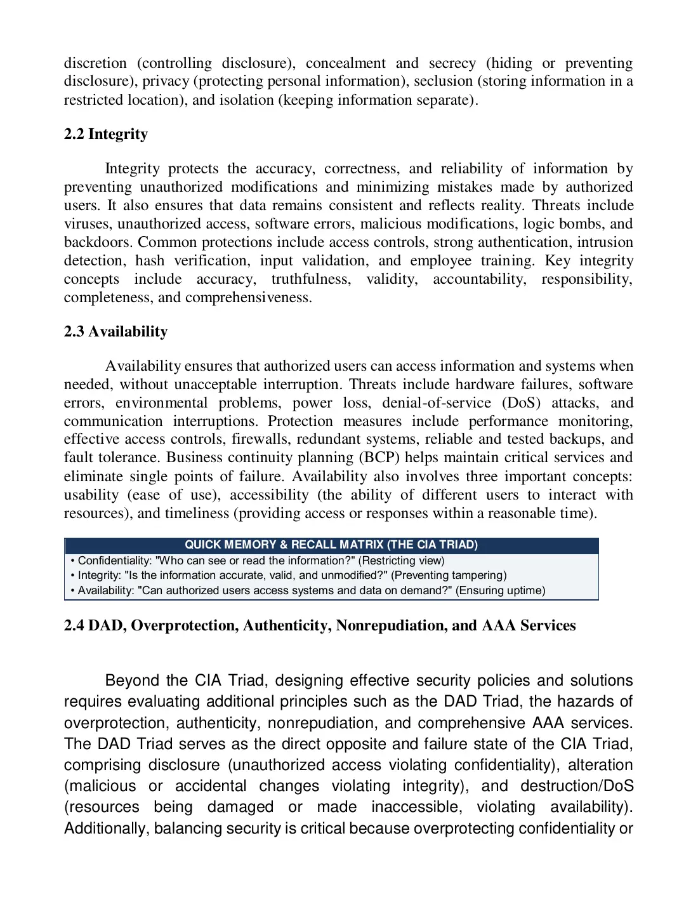
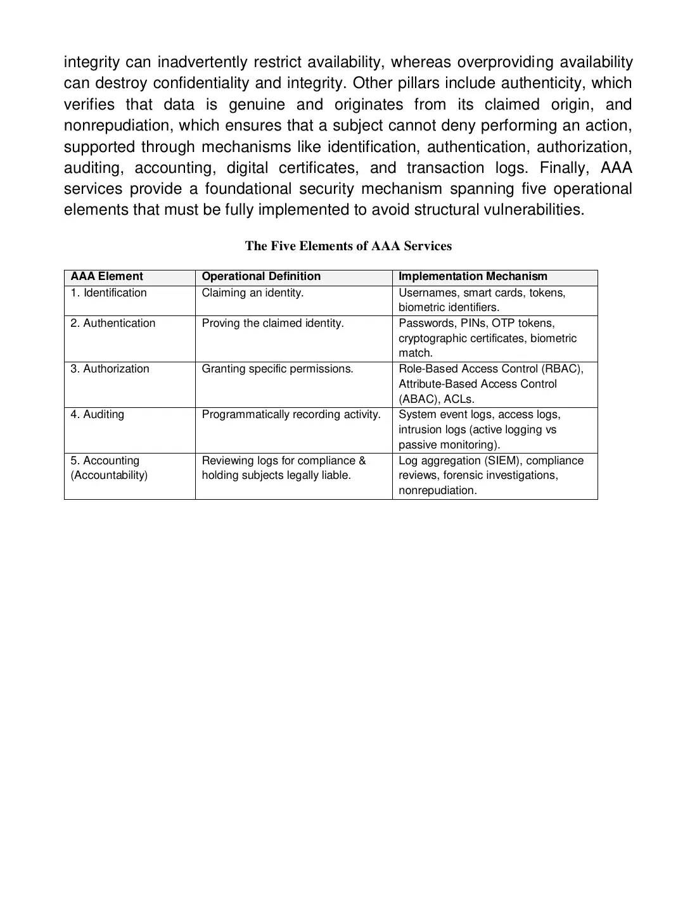
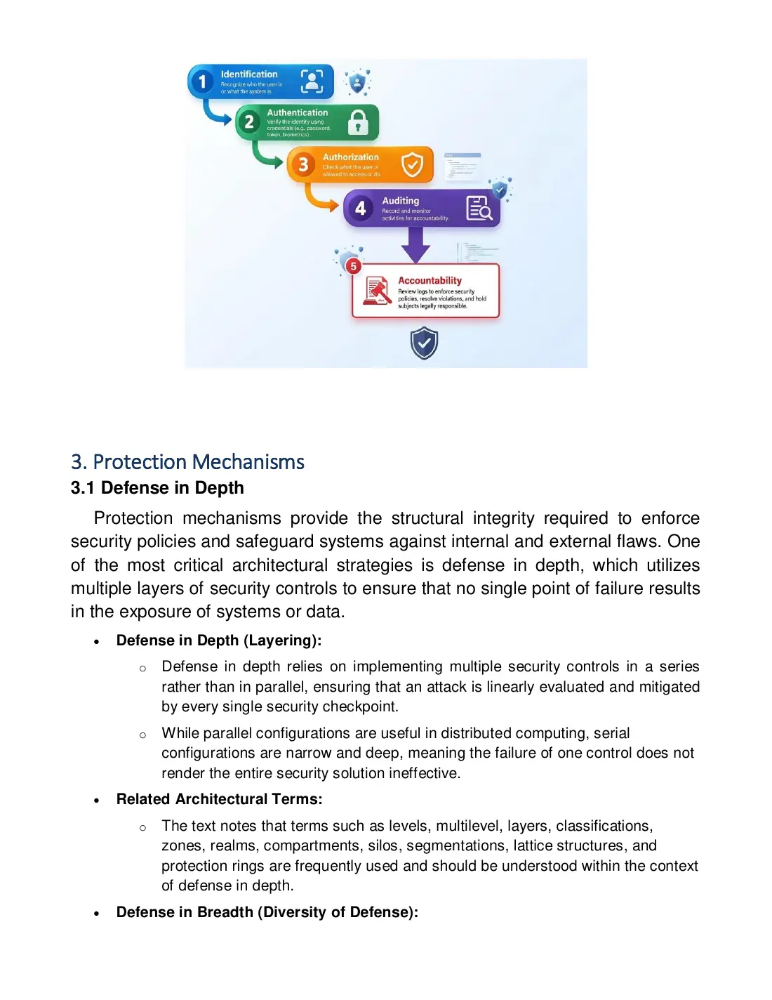
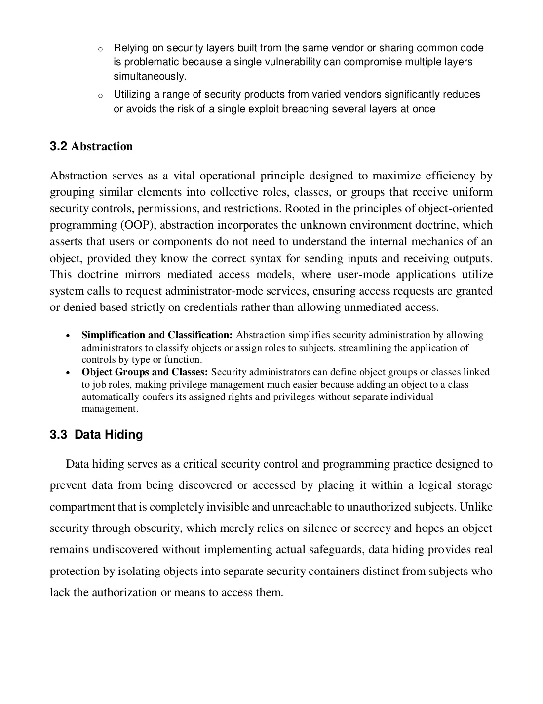
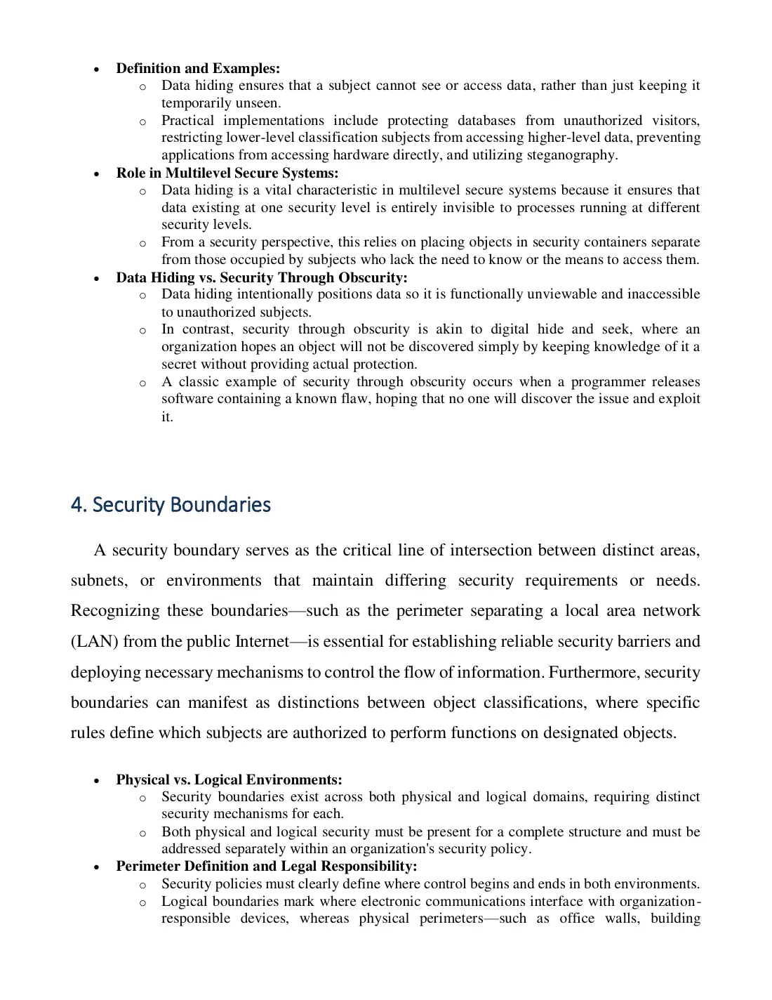
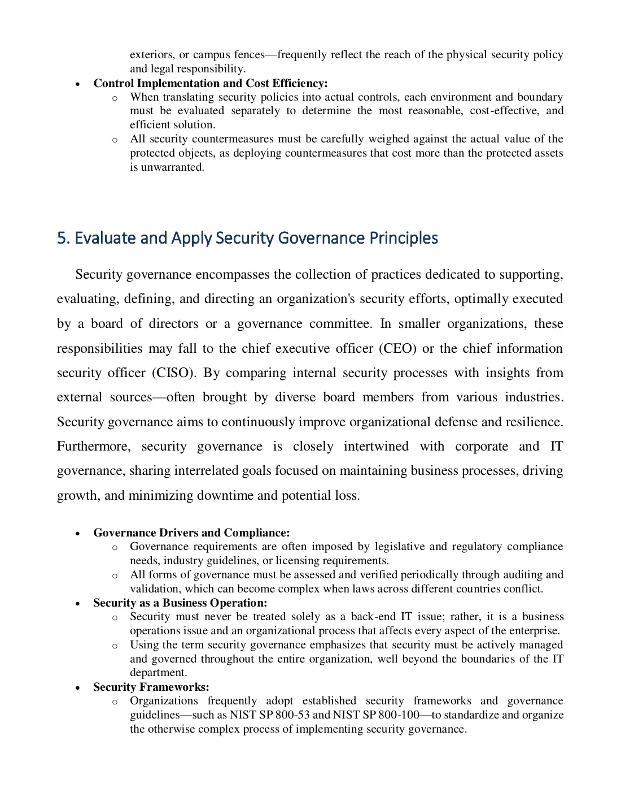
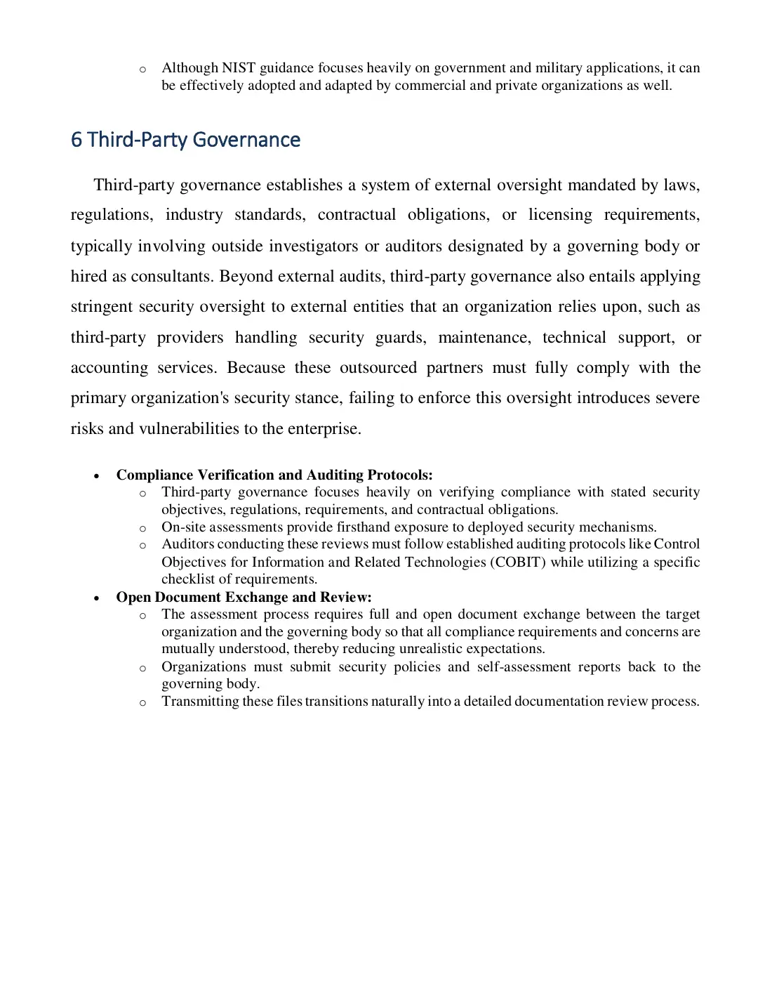

9 pages · 748 KB Open original PDF ↗
Σ Read the summary: الحوكمة والضوابط في زمن المخابطDefinitions, Q/ questions and comparison tables ✎ Take the mock exam for this lectureTimed, sectioned like the real exam, with model answers and marks







